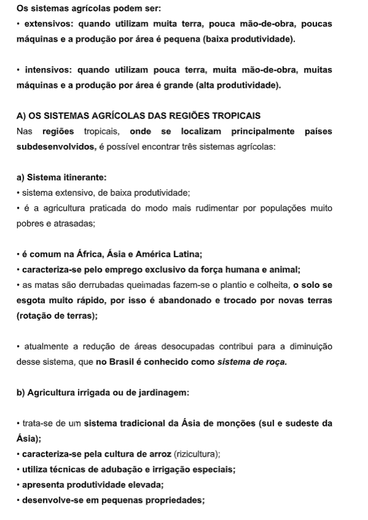
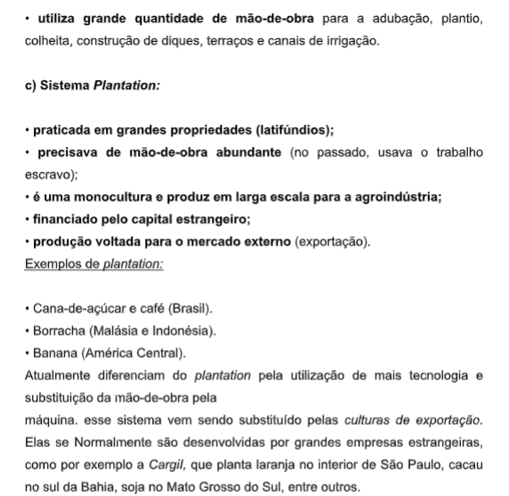
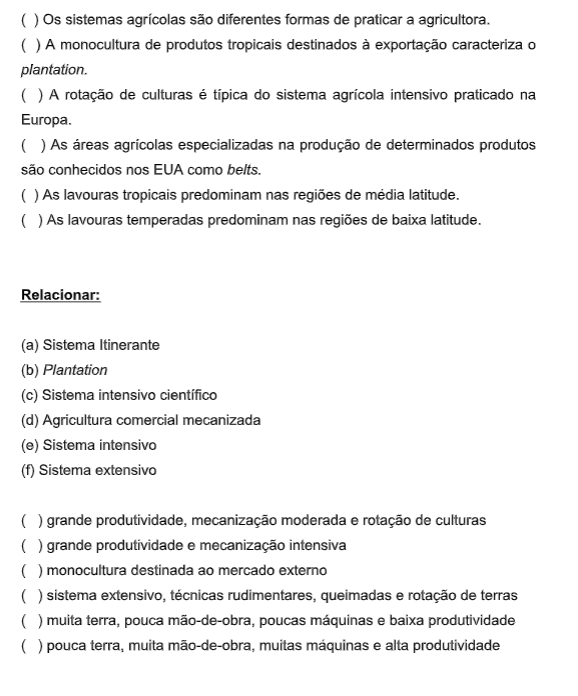
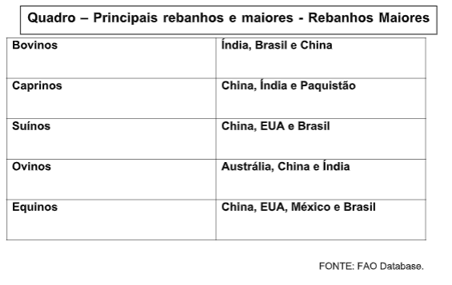
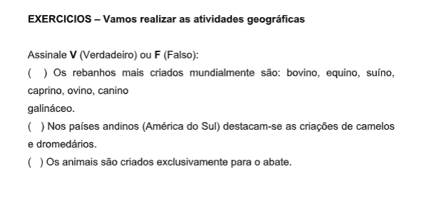
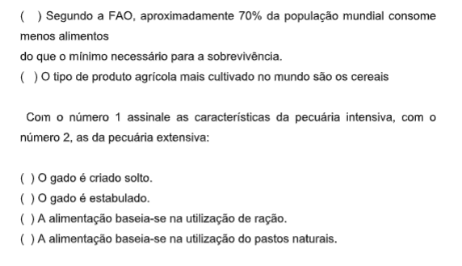
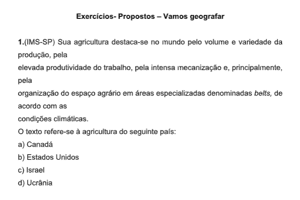

Capítulo 5: O Comércio Internacional
O volume de bens comercializados internacionalmente é enorme. Aproximadamente 70% do total das exportações e importações são realizados pelos países desenvolvidos.
PARTICIPAÇÃO DOS PAÍSES DESENVOLVIDOS NO TOTAL DAS EXPORTAÇÕES MUNDIAIS
É importante dizer que o consumo (compra) mundial é indicado em valor e não em volume. Além disso, para a exportação calcula-se o valor FOB (Free on Board), ou seja, o preço da mercadoria no porto de embarque, sem o seguro e o frete. Para a importação, calcula-se o valor CIF (Cost, Insurance, Freight), isto é, incluindo os custos de seguros e transportes.
Na prática, os países pobres têm que exportar grandes volumes para obterem as divisas (dinheiro) necessárias para o pagamento das suas importações, evitando o déficit das suas balanças comerciais. O que é balança comercial e como pode se apresentar?
A balança comercial é a relação entre as exportações e as importações realizadas por um país. Ela pode se apresentar das seguintes formas: • déficit, quando o valor das importações é maior que o das exportações; • equilíbrio, quando os valores de importação e exportação são iguais; • superávit, quando o valor das exportações supera o das importações;
 FLUXO DE MERCADORIAS A — PRODUTOS MANUFATURADOS
O comércio de produtos manufaturados, em valor, corresponde a 65% do comércio internacional.
Os países desenvolvidos são responsáveis pela maior parte dessa exportação. Alguns países do mundo subdesenvolvido (destaque para os Tigres Asiáticos) vêm aumentando suas exportações de produtos manufaturados, principalmente em função da presença das empresas transnacionais.
Filiais de várias empresas do mundo desenvolvido foram instaladas nos países subdesenvolvidos, auxiliadas pelos baixos custos de mão-de-obra, matéria- prima, energia, isenção de impostos, doação de terrenos etc...
B — PRODUTOS PRIMÁRIOSOs gêneros alimentícios não industrializados, as matérias-primas como produtos agrícolas, são os principais produtos de exportação da maioria dos países subdesenvolvidos. Porém, a recente Industrialização desses países tem mudado bastante essa situação.
OS FLUXOS DE CAPITAIS
O movimento de capitais entre os países também aumentou muito ao longo dos anos. Essas transações acontecem em função de empréstimos e investimentos diretos.
A — EMPRÉSTIMOS
Os empréstimos são contraídos pelos países para vários objetivos, principalmente para: • pagamento das importações; • amortização (diminuição) das dívidas externas. Os países, principalmente os subdesenvolvidos, buscam os empréstimos para pagar os juros das dívidas anteriores; • investimento em obras públicas (metrô, rodovias etc.), desenvolvimento industrial, agrícola, comercial, nos serviços (educação, saúde etc.), entre outros.
B — INVESTIMENTOS DIRETOS
Investimento direto é o capital estrangeiro investido na indústria, comércio, serviços etc. Esses investimentos não entram na dívida externa, mas podem provocar a descapitalização de um país, pois saem do país na forma de lucros e dividendos para os países investidores. Entre os países que mais realizam investimentos no exterior destacam-se os EUA.
Vamos geografar! Assinale V (Verdadeiro) ou F (Falso):
A GLOBALIZAÇÃO
A interdependência e a complementação dos países no plano produtivo, comercial e cultural têm aumentado significativamente nos últimos anos, sobretudo após a crise do socialismo.
Esse fenômeno é chamado de globalização.Além da intensificação das relações comerciais, as indústrias se espalharam pelo mundo em busca de novos mercados e de lugares onde os custos de produção sejam menores. Na globalização, as grandes corporações vêm dominando o mundo, na medida em que decide como, quanto e onde produzir. No interior dos territórios nacionais formam-se espaços transnacionalizados e observa-se a fragilização do poder do Estado. Contudo, o fenômeno da globalização contrasta com a existência de fronteiras políticas, sobretudo entre os países ricos e pobres.
Leitura complementar:
O mundo não é mais como foi o de papai.
Ouve-se falar num mundo que as grandes corporações americanas estão demitindo dezenas de milhares de trabalhadores de olhos azuis e transferindo suas operações para países menores, de mão-de-obra mais barata. Outro momento, as novidades amargas vêm da Europa Ocidental. Numa região que conseguiu contornar as tensões do pós-guerra com a construção de uma rede de assistência social impecável e caríssima, o estado do bem-estar terminou quebrado e, ainda assim, o número de empregos disponíveis continua exatamente o mesmo nos últimos vinte anos. Países tão diferentes como a Espanha e a Finlândia enfrentam taxas de desemprego de quase 20% (...) Na segunda economia do mundo, a japonesa, vive-se uma recessão desde o início da década. As indústrias japonesas estão indo instalar-se em países com mão- de-obra mais barata, e, em casa, a taxa de desemprego oficialmente admitida é de 3,4%. No mundo do trabalho internacionalizado, o que mais há é desemprego. E quem fica à margem desse novo giro do capitalismo está condenado ao atraso e à miséria. (...) Não, não está em andamento um processo de decadência econômica. O mundo que produz e o que emprega não é mais o de vinte anos atrás, está girando mais depressa. (...) O que globalização está provocando todo esse misto de ansiedade e ressentimento se chama produtor vai comprar matéria-prima em qualquer lugar do mundo onde ela seja melhor e mais. É um processo de aceleração capitalista, num ritmo jamais visto em que o barata. Instala a fábrica nos países onde a mão-de-obra fique mais em conta, não importa se no Vietnã ou na Guatemala. Vende a mercadoria para o mundo inteiro. Em resumo: o entrelaçamento econômico das paróquias é um processo que começou na Pré- História, mas sempre progrediu em marcha lenta. Neste momento, está na velocidade da luz. Essa é a diferença. (...) Quando a máquina a vapor entrou em cena, ela também provocou um choque de aceleração produtiva. Passou a movimentar os teares — e um turbilhão de braços humanos perdeu sua função e seu emprego. Perplexos, assustados, chegaram a invadir fábricas para destruir as máquinas que os deixavam sem o ganha-pão. No século XVIII foi a máquina a vapor; No século XX, o motor da nova revolução foi a tecnologia, o aperfeiçoamento dos transportes e das comunicações. A tecnologia sempre se alterou, nunca tão depressa. (...) E as comunicações, em sua capacidade de conectar instantaneamente os pontos diferentes do planeta, tornaram as distâncias irrelevantes para as atividades empresariais. (...) Uma das facetas da aceleração capitalista está no campo financeiro. (...) Cresceu 130 vezes em apenas duas décadas e meia. Esse dinheiro pode pertencer a um pequeno poupador japonês ou a um superinvestidor ... e está financiando coisas tão diversas como uma fábrica no Ceará ou o déficit público nos Estados Unidos. (...)
A outra faceta do processo de globalização está na indústria. Tomem-se as dez maiores corporações mundiais — Shell, Walmart, Exxon, Sinopec Group, China Petroleum, BP, State Grid, Toyota, Volkswagen, Total. Elas faturam 3,7 trilhões de dólares, o que equivale ao PIB conjunto de Brasil, México, Argentina, Chile, Colômbia, Peru, Uruguai e Venezuela. Se a conta se expande para as 100 maiores corporações, descobre-se que um terço do comércio internacional refere-se a trocas entre unidades das transnacionais. Elas empregam 20% da mãode- obra não agrícola nos países em desenvolvimento e 40% nos países desenvolvidos, (...) A força dessas corporações e sua atuação geográfica — operam praticamente em todos os países— mudaram o enfoque do jogo econômico. No passado, quem fazia as grandes decisões econômicas eram os governos. Agora são as empresas.
